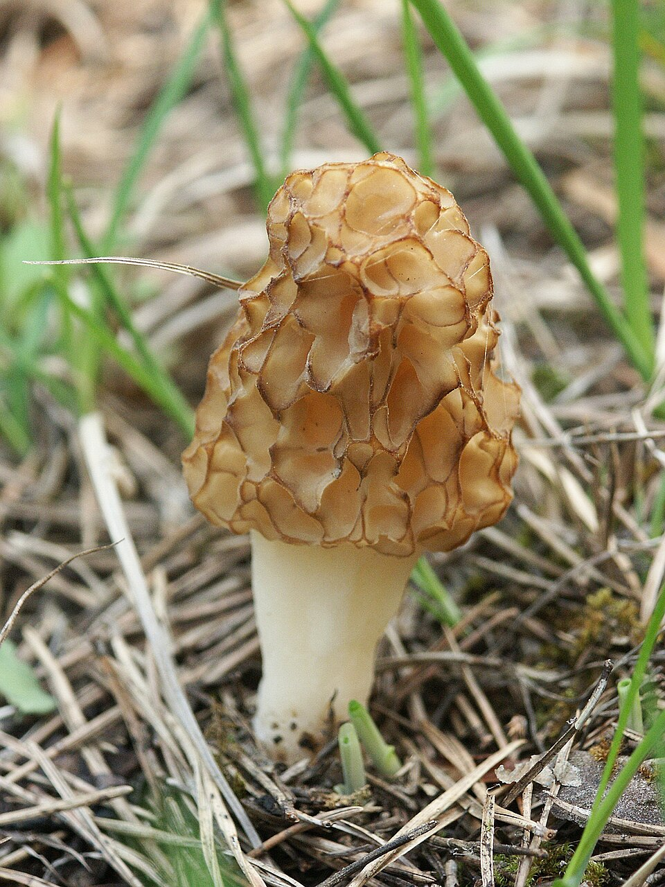
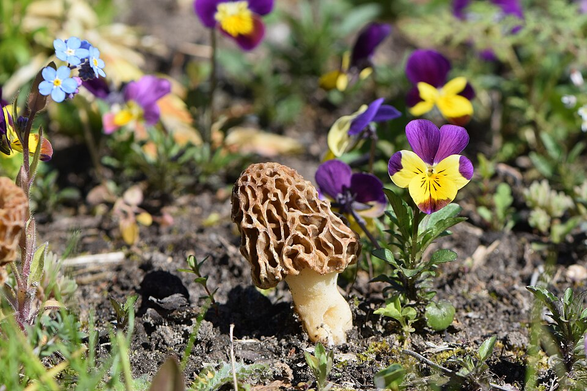

Smardz jadalny
Morchella esculenta · rodzina smardzowate (Morchellaceae) · Workowiec



Sezon
III – V (wiosna!)
Kapelusz
3–10 cm, żółtawy, siateczka
Typ
Workowiec (Ascomycetes)
Siedlisko
Sady, parki, lasy liściaste
UWAGA
Surowy TRUJĄCY — gotuj!
Nazwy w regionie
CZ: smrž jedlý · SK: smrčok jedlý
Opis i występowanie
Smardz jadalny to wiosenny rarytas — jeden z pierwszych grzybów roku, zbierany od marca do maja. Rośnie w starych sadach jabłkowych, parkach, na obrzeżach lasów liściastych (jesionu, wiązu, topoli), w ciepłych wilgotnych miejscach. Spotykany w całej Polsce, Czechach i Słowacji, ale mniej pospolity niż grzyby letnie.
Wygląd niepowtarzalny: kapelusz o kształcie regularnej siateczki (plastra miodu) — żółtawobrązowy do ciemnobrązowego, 3–10 cm wysokości. Trzon biały lub kremowy, gruby, ziarnisty, wydrążony w środku (przekrój: całkowicie pusty). To workowiec — zaliczany do zupełnie innej grupy niż typowe grzyby kapeluszowe.
⚠ SUROWY SILNIE TRUJĄCY! Świeże smardze zawierają substancje hemolityczne (kwas smardzowy), które ulegają rozkładowi dopiero po gotowaniu minimum 15 minut. Parowanie i gotowanie w otwartym garnku z odprowadzeniem pary — obowiązkowe. Nigdy nie jedz smardzy surowych ani niedogotowanych.
Skład (po obróbce termicznej)
| Składnik | Wartość / efekt |
|---|---|
| Białko (3,1 g/100g) | Pełny profil aminokwasowy |
| Żelazo, fosfor | Krew, kości |
| Witaminy B, D2 | Metabolizm, odporność |
| Błonnik | Zdrowie jelit |
| Kalorie: 31 kcal/100g | Niskokaloryczny |
Zastosowania kulinarne
- Sos śmietanowy — klasyczne zastosowanie; delikatny smak smardzy podkreśla śmietanka.
- Risotto — do risotto bianco z parmezanem; wiosenny luksus.
- Farsz — do omletów, naleśników, vol-au-vent.
- Suszenie — doskonałe; aromat suszonych smardzy intensywniejszy.
Zbiór i obróbka wstępna
- Zbieraj nożem przy podstawie. Przekrój — wnętrze musi być całkowicie puste (bez wypełnienia).
- Przed gotowaniem: przelej wrzącą wodą (blanszuj) 2 min, odlej wodę.
- Następnie gotuj właściwą potrawę min. 15 min w otwartym garnku.
- Suszenie: w całości lub przekrojone, w 40°C przez 8–10 h.
💡 Kluczowy test: przekrój smardza wzdłuż — wnętrze musi być całkowicie puste. U piestrzennicy (trującego sobowtóra) trzon wypełniony jest watowatą tkanką.
Przepisy
🍳 Smardze w sosie śmietanowym
- Smardze blanszuj 3 min, odlej wodę. Pokrój na połówki lub ćwiartki.
- Szalotkę i czosnek zeszklij na maśle. Dodaj smardze, smaż 5 min.
- Wlej 150 ml śmietanki 30%, gotuj 10 min na małym ogniu.
- Dopraw solą, pieprzem, tymiankiem. Podawaj z grillowanym pieczywem.
🍚 Wiosenne risotto ze smardzami
- Smardze blanszuj, pokrój. Szalotkę zeszklij, dodaj smardze, smaż 5 min.
- Dodaj ryż Arborio, prażyć 2 min. Wlewaj ciepły bulion chochlami co 3 min — 18 min.
- Wymieszaj z parmezanem i łyżką masła. Podawaj z posiekaną natką.
🥚 Omlet ze smardzami i serem
- Smardze blanszuj 3 min, posiekaj, podsmaż na maśle 5 min.
- Wbij 4 jajka, dopraw solą i pieprzem. Wylej na gorącą patelnię.
- Gdy zetnie się od dołu, posyp smardze i ser brie lub gruyère.
- Złóż omlet na pół i podawaj natychmiast.
🌿 Suszone smardze — intensywny aromat przez rok
- Smardze oczyść, przekrój wzdłuż na połówki.
- Susz w piekarniku 40°C (uchylone drzwi) przez 8–10 h lub na słońcu 2 dni.
- Gotowe gdy kruche i suche. Przechowuj w słoiku 1–2 lata.
- Przed użyciem namocz 20 min w ciepłej wodzie (wywaru nie wylewaj!).
✓ Zalety
- Jedyny znaczący grzyb wiosenny — sezon marzec-maj
- Wyjątkowy, delikatny smak, ceniony przez szefów kuchni
- Niepowtarzalny wygląd — łatwa identyfikacja
- Doskonały suszony — aromat intensywnieje
✗ Wady i uwagi
- Surowy trujący — obowiązkowa obróbka termiczna
- Groźny sobowtór: piestrzenica kasztanowata (ŚMIERTELNA)
- Krótki sezon — tylko wiosna
- Mniej pospolity niż grzyby letnie
- Niezbyt duże okazy — wymagają wiedzy do zbioru
☠ ŚMIERTELNIE NIEBEZPIECZNY SOBOWTÓR: Piestrzenica kasztanowata (Gyromitra esculenta)
Ta sama pora roku, podobne środowisko! Piestrzenica wygląda jak mózg lub nieregularne zmięte fałdy — zupełnie inaczej niż regularna siateczka smardza. Zawiera gyromitrin, który w organizmie rozkłada się do monomethylhydrazyny — silna trucizna niszcząca wątrobę i czerwone krwinki. Objawy po 6–12 h: wymioty, skurcze, żółtaczka. Śmiertelna dawka: 30–50 mg/kg masy ciała.
Klucz: Smardz = regularna siateczka (plaster miodu) · Piestrzenica = nieregularne fałdy jak mózg · Smardz jest wewnątrz całkowicie wydrążony.
Ta sama pora roku, podobne środowisko! Piestrzenica wygląda jak mózg lub nieregularne zmięte fałdy — zupełnie inaczej niż regularna siateczka smardza. Zawiera gyromitrin, który w organizmie rozkłada się do monomethylhydrazyny — silna trucizna niszcząca wątrobę i czerwone krwinki. Objawy po 6–12 h: wymioty, skurcze, żółtaczka. Śmiertelna dawka: 30–50 mg/kg masy ciała.
Klucz: Smardz = regularna siateczka (plaster miodu) · Piestrzenica = nieregularne fałdy jak mózg · Smardz jest wewnątrz całkowicie wydrążony.
Ciekawostki
- Smardz to workowiec (Ascomycetes), nie grzyb kapeluszowy. Spokrewniony z truflem i drożdżami bardziej niż z borikiem.
- Francuzi nazywają smardza morille — jest tam uważany za jeden z najcenniejszych grzybów, cenniejszy niż trufla biała w popularności.
- Po pożarach leśnych i w sadach po wykarczowaniu drzew smardze pojawiają się masowo — to grzyb pionierski.
- Można go hodować, ale jest to bardzo trudne i kosztowne — większość pochodzi ze zbioru dzikiego.